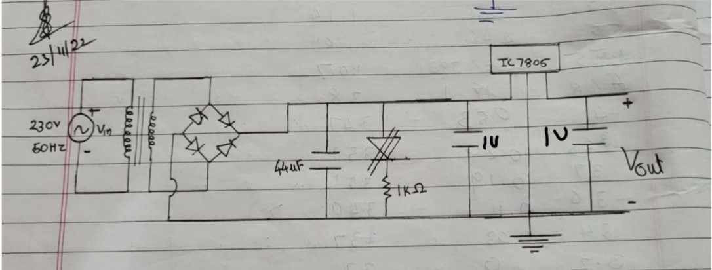
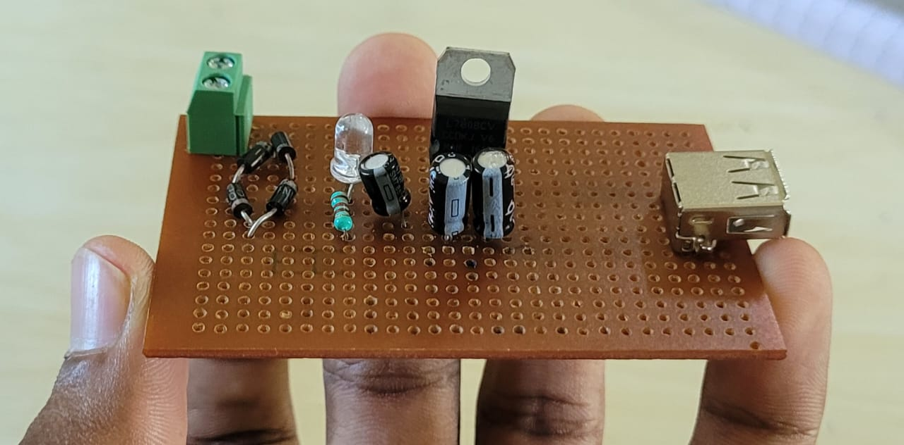
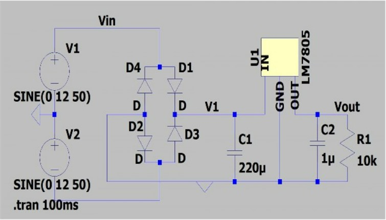
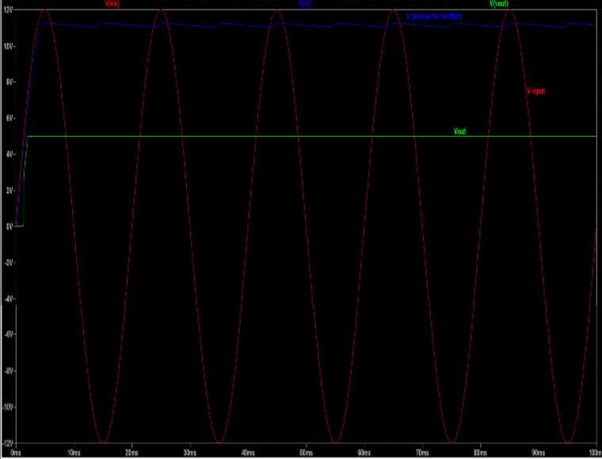
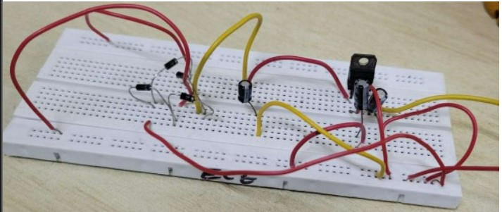
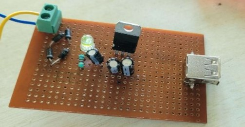
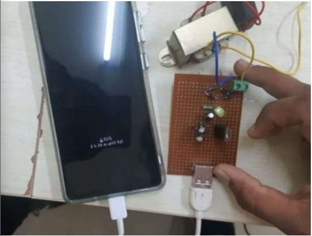

Name: PARAS SANJAY KORE
Roll No.: 21ECE1024
Department: ECE Department
Academic Session: August-December 2022
Aim: To design a charging circuit in a compact circuit board.
Apparatus:
Transformer
2-pin PCB mount terminal block
USB Type-A female connector
Connection wires
3 Capacitors (2 of 1.5 F and 1 of 40uf)
Breadboard
Resistor 10kΩ
PCB board
IC 7805
Multi-meter
LED
Diodes (4)
Soldering gun
Soldering wire
LT Spice (for simulation purposes)
Theory:
The charging circuit we are designing contains 3 main circuit components, i.e., step-down transformer, RC filter and voltage regulator. First, we make use of a transformer to step down the voltage from 220V(50hz) to 24V(50hz). Since we are making use of IC7805, we don’t need to provide a 24V from the secondary side, hence we provide a 12V input to the rectifier circuit.
After filtering this AC signal, we will get a DC output of 12V from the rectifier circuit, and then we feed this input to the voltage regulator circuit. After feeding the input to the regulator circuit, we obtain a DC output of 5V, then by using a female USB type A connector we give this input to the charging cable which is connected to the mobile. When we switch on the circuit, we can see the phone is charging. The circuit for this experiment is as follows

Procedure: First,
we connect the primary side of the transformer to the mains with the switch in off mode. Then we connect the
secondary side of the transformer to the full wave diode rectifier configuration. Then
we connect a large valued capacitor across the diode bridge configuration to filter the rectified input
signal. Then we connect it
IC7805 with 2 capacitors of 1µF connected between input-ground and output-ground.

LT
Spice Simulation:


Observation:



Using a
multimeter we calculated the voltages across the transformer, the rectifying circuit and the voltage regulator
circuit in the compact circuit. The values of the voltages observed were 12V (AC), 12V (DC) and 5V (DC)
respectively. It was also observed that, when the phone was connected to the charging circuit, the LED light
dimmed to a certain level. This is because, when we connect the phone, it draws more current from the circuit
and hence the LED dims. It is also observed that when we switch off the circuit the LED remains lit for a short
period, this is because the energy stored within the capacitor gets used up for it. Conclusion: Hence, we have
successfully designed and tested a compact charging circuit for mobile phones/ power-bank using IC7805.